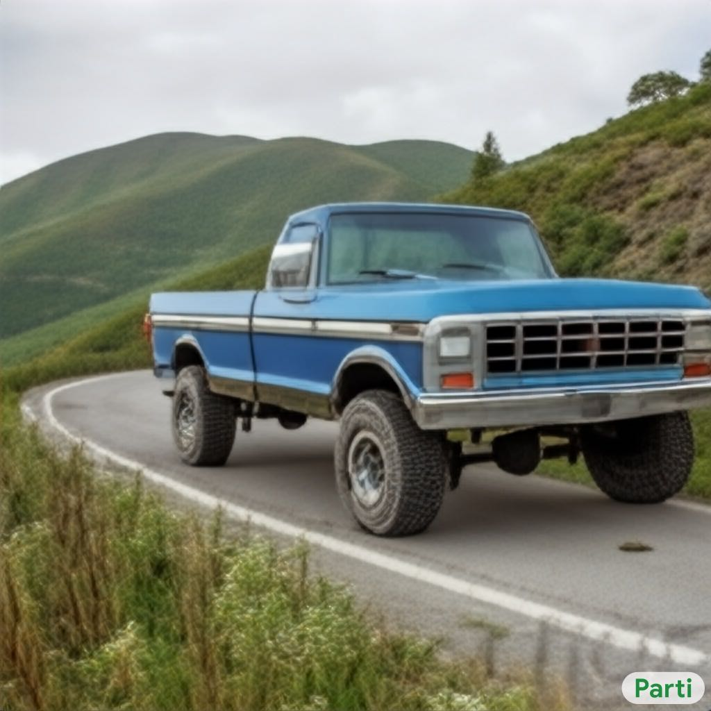
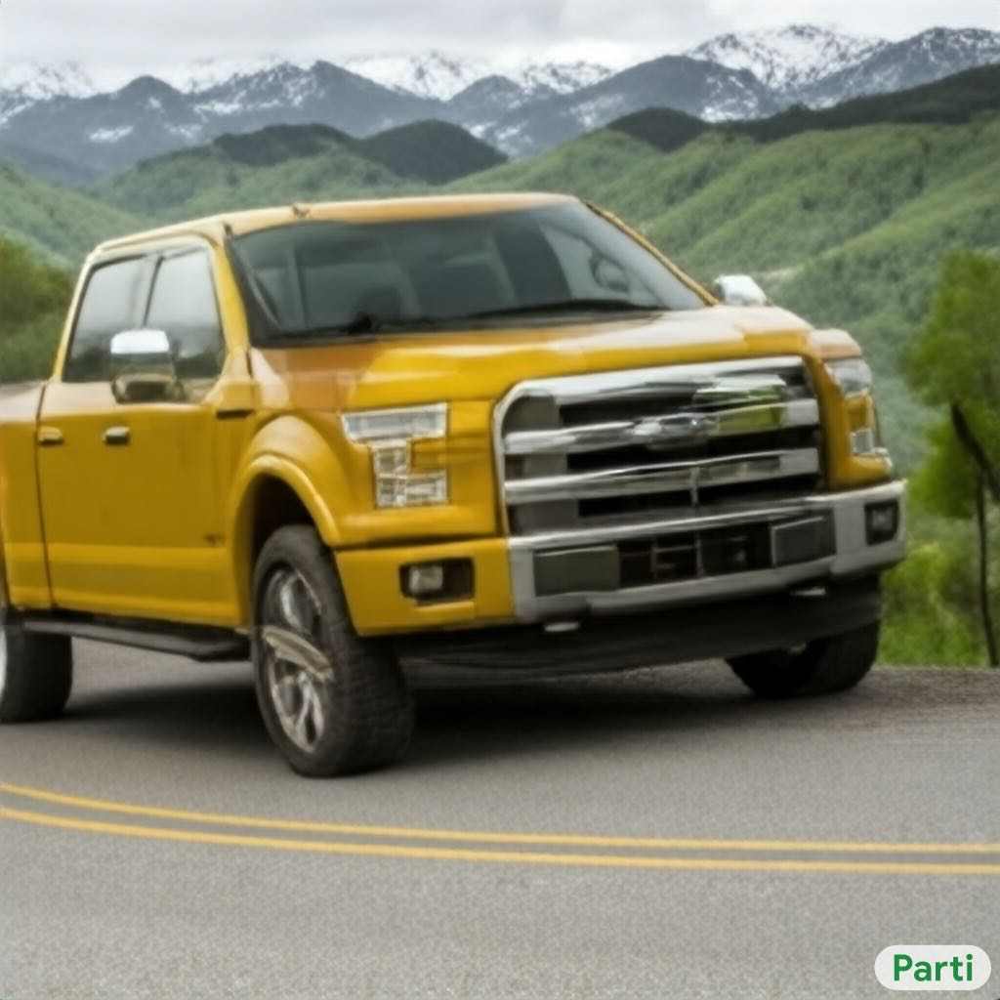

-
A. A photo of a frog reading the newspaper named “Toaday” written on it. There is a frog printed on the newspaper too.B. A portrait of a statue of the Egyptian god Anubis wearing aviator goggles, white t-shirt and leather jacket. The city of Los Angeles is in the background. Hi-res DSLR photograph.C. A high-contrast photo of a panda riding a horse. The panda is wearing a wizard hat and is reading a book. The horse is standing on a street against a gray concrete wall. Colorful flowers and the word "PEACE" are painted on the wall. Green grass grows from cracks in the street. DSLR photograph. daytime lighting.
D. A giant cobra snake made from X. X ∈{“salad”, “pancakes”, “sushi”, “corn”}E. A wombat sits in a yellow beach chair, while sipping a martini that is on his laptop keyboard. The wombat is wearing a white panama hat and a floral Hawaiian shirt. Out-of-focus palm trees in the background. DSLR photograph. Wide-angle view.F. The saying "BE EXCELLENT TO EACH OTHER" ..., (a) brick wall and alien (b) driftwood. (c) old wooden boat with reflection. (d) stained glass. (See text for full prompts.)


G. Three-quarters front view of a X Y Z coming around a curve in a mountain road and looking over a green valley on a cloudy day. DSLR photograph. X ∈{blue, red, yellow}, Y ∈{1977, 1997, 2017}, Z ∈{Porsche 911, Corvette, Ford F-150}H. A raccoon wearing formal clothes, wearing a tophat and holding a cane. The raccoon is holding a garbage bag. Oil painting in the style of X. X ∈ {“Rembrandt”, “Vincent Van Gogh”, “Hokusai”, “pixel art”, “pointillism”, “abstract cubism”, “Egyptian tomb heiroglyphics”, “traditional Chinese painting”, “Madhubani art”}I. A photo of an Athenian vase with a painting of X playing Y in the style of Egyptian hieroglyphics. X ∈{“pandas”, “toucans”, “pangolins”}, Y ∈{“tennis”, “soccer”, “basketball”}
Figure 2: Selected Parti images. See Section ?? for discussion.

 loss with same loss weighting in [
loss with same loss weighting in [ version and about 30M parameters for the
version and about 30M parameters for the  version. We note that
diffusion models could also be used here as iterative refinement super-resolution modules, as also
demonstrated in DALL-E 2 [
version. We note that
diffusion models could also be used here as iterative refinement super-resolution modules, as also
demonstrated in DALL-E 2 [ images to higher-resolution
ones based on a frozen ViT-VQGAN image tokenizer. The super-resolution module
takes
images to higher-resolution
ones based on a frozen ViT-VQGAN image tokenizer. The super-resolution module
takes  images as inputs without conditioning on text inputs.
images as inputs without conditioning on text inputs. latent codes from a input image). As an example, the 67-word description of the
Starry Night prompt given in Figure
latent codes from a input image). As an example, the 67-word description of the
Starry Night prompt given in Figure  in
MLP dimensions. We double the number of heads when the model dimension is doubled. In the
current scaling variants, our configuration prefers a larger decoder for modeling image tokens
and as a result the decoder has more layers (
in
MLP dimensions. We double the number of heads when the model dimension is doubled. In the
current scaling variants, our configuration prefers a larger decoder for modeling image tokens
and as a result the decoder has more layers (